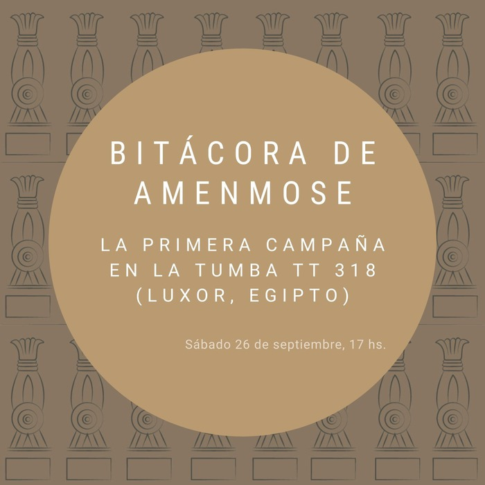

Bitacoras

Bitácora de Amenmose El próximo sábado 28 de noviembre a las 17 hs. se realizará la última de las conferencias del ciclo que denominamos Bitácora de Amenmose.

Bitácora de Amenmose El próximo sábado 7 de noviembre a las 17 hs. continuaremos con la serie de conferencias que denominamos Bitácora de Amenmose.

Bitácora de Amenmose El próximo sábado 17 de octubre a las 17 hs. continuaremos con la serie de conferencias que denominamos Bitácora de Amenmose.

Bitácora de Amenmose El próximo sábado 26 de septiembre a las 17 hs. daremos inicio a una serie de conferencias que tienen como objetivo compartir los registros, experiencias y descubrimientos de nuestra primera temporada trabajando en la tumba de Amenmose